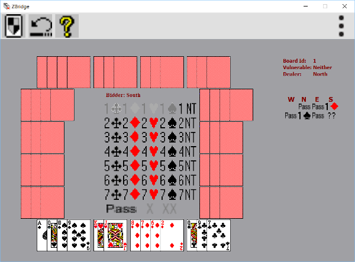

Main
Window.
The Main window shows the playing table as the
play
progresses during the auction and play phases of the play. Below is
shown an example of how it looks in the auction phase.
The ZBridge toolbar is shown along the top of the window.
The ZBridge "Main" menu is shown by using
from the toolbar. A new playing session is started by touching from the toolbar.
If for some reason you want to skip the current play and continue with the next play in the session you can use Deal New Hand from the "Game" menu (selected from
the "Main" menu)

'
The bridge table with the cards are shown with one hand on each of sides. On the right part of the window are relevant information displayed. Like board id, vulnerability, dealer and the auction in the bidding phase. In this phase is also shown the next bid pad in the center of the window. In the play phase is bid information not shown, instead is information related to the playing phase shown. Like declarer, contract and number of plays taken. The cards played as the
play progresses in the play phase will shown in the center of the window.
You can obtain help to the next bid or play by
choosing  from the toolbar. The computer will then show
you how it would bid or play. If you touch one of the bids
shown on the right part of the window, then a pop up will show you the
rules for the bid and whether there was an alert for this bid. It is
also possible to restart the bid or the play by using Rebid, Replay from the "Game" menu (selected from
the "Main" menu). Finally you can undo a bid or play by using
from the toolbar. The computer will then show
you how it would bid or play. If you touch one of the bids
shown on the right part of the window, then a pop up will show you the
rules for the bid and whether there was an alert for this bid. It is
also possible to restart the bid or the play by using Rebid, Replay from the "Game" menu (selected from
the "Main" menu). Finally you can undo a bid or play by using  from the toolbar.
from the toolbar.